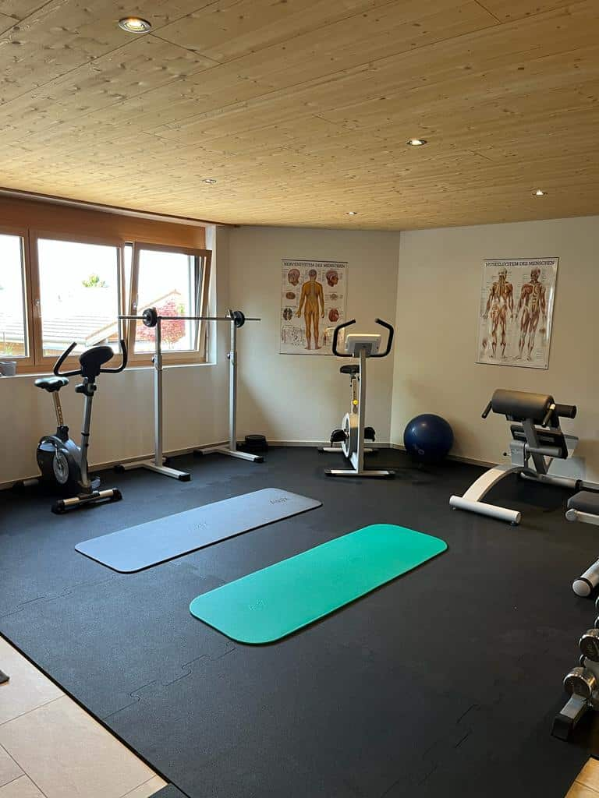
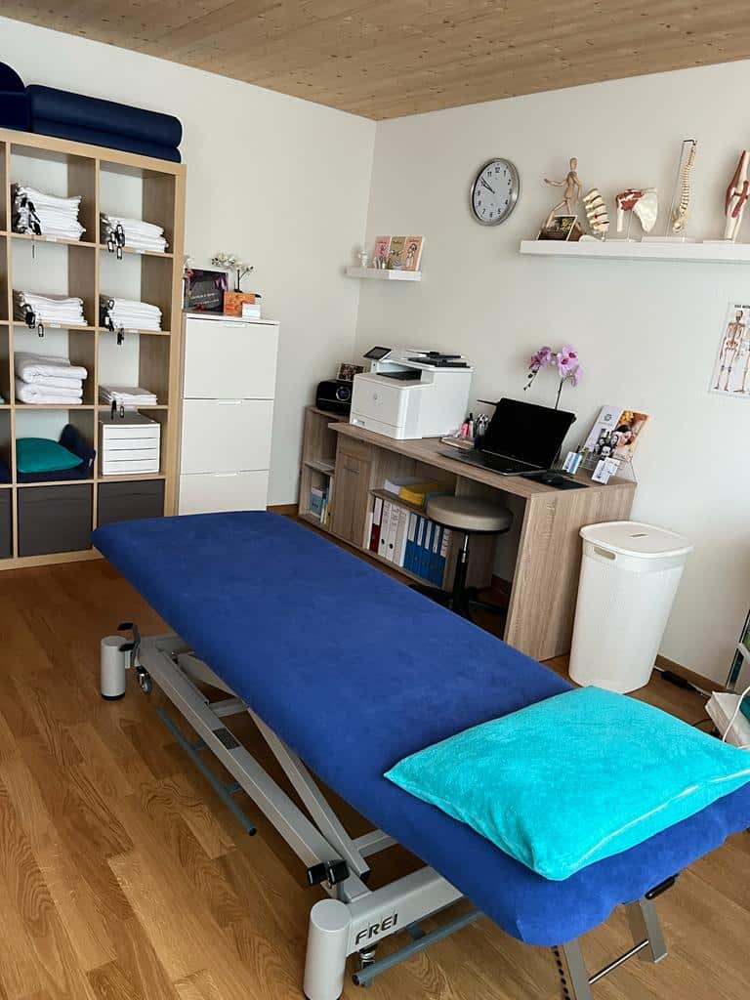
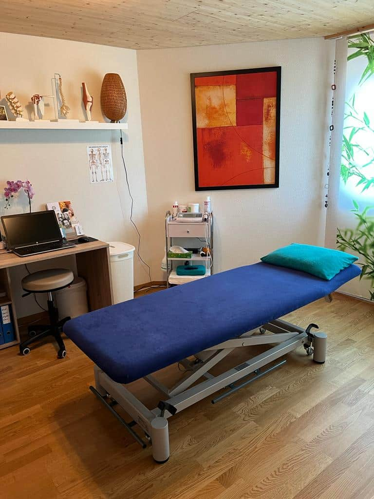
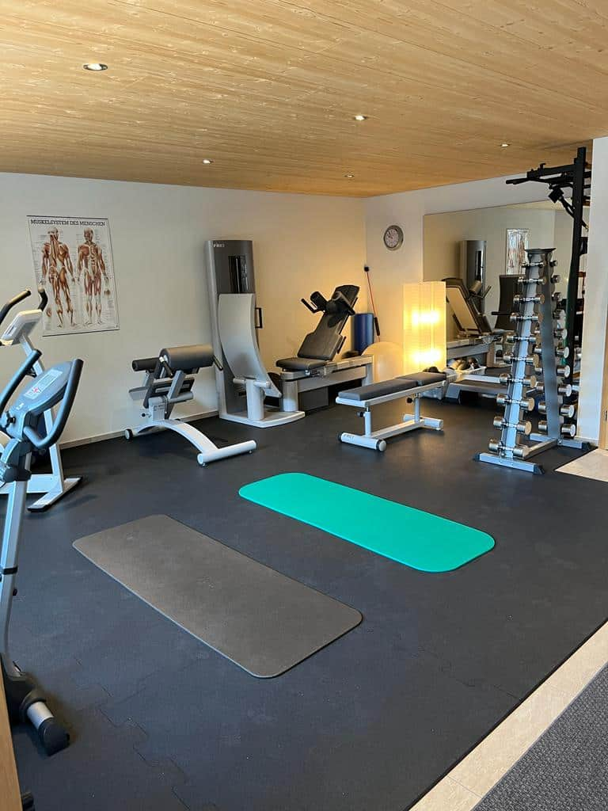
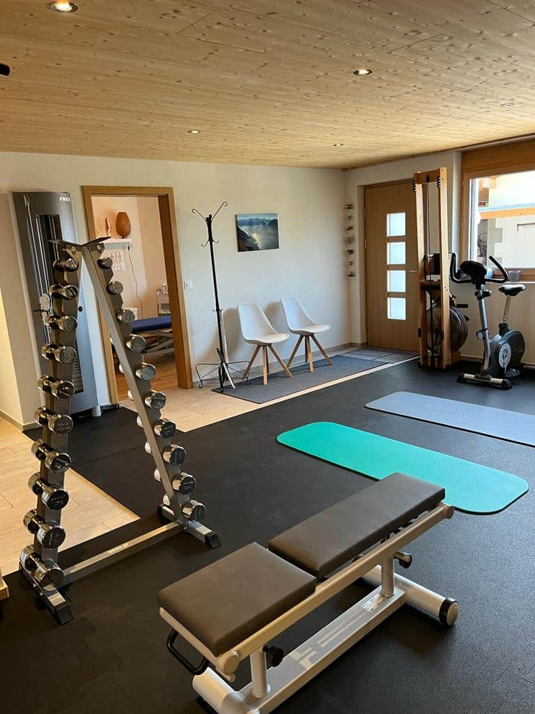

Manuelle Therapie
Gezielte Mobilisationen nach Maitland und McKenzie – für mehr Beweglichkeit ohne Schmerz.
Seit über 15 Jahren begleitet Conny Balmer Menschen mit Körper, Geist und Seele zurück in den Alltag, in den Beruf und in den Sport – ganzheitlich, präzise und persönlich.
Mein Name ist Conny Balmer. Eidg. dipl. Physiotherapeutin HF seit 1999, Mutter, leidenschaftliche Sportlerin und seit 2014 selbständig in Brienz.
Mein Ansatz ist ganzheitlich: Ich behandle den Menschen mit Körper, Geist und Seele – nicht das Symptom allein. Mit fundierter Ausbildung in manueller Therapie, dem Fasziendistorsionsmodell (FDM), Sportphysiotherapie und medizinischer Trainingstherapie begleite ich Sie strukturiert zurück zu Kraft, Beweglichkeit und Freude an der Bewegung.
Von der manuellen Therapie bis zur medizinischen Trainingstherapie – jede Behandlung wird individuell auf Ihre Situation, Ihre Ziele und Ihren Alltag abgestimmt.
Gezielte Mobilisationen nach Maitland und McKenzie – für mehr Beweglichkeit ohne Schmerz.
Individueller Rehabilitationsplan – schnell, sicher und nachhaltig zurück zur Leistung.
Gezielte Lösung schmerzhafter Muskelverhärtungen – spürbare Erleichterung schon nach wenigen Sitzungen.
Befunden und Behandeln über die Faszien – effektiv bei akuten und chronischen Beschwerden.
Strukturiertes Aufbautraining im hauseigenen Fitnessraum – mit individueller Begleitung.
Sanfte Behandlung nach Operationen oder bei Schwellungen – fördert Regeneration und Wohlbefinden.
Unterstützung von Gelenken und Muskulatur im Training und im Alltag.
Pilates, TRX®, Ultraschall, Gangschulung, Sturzprävention – die ganze Bandbreite moderner Physiotherapie.
Klassische Massage & Sportmassage als Selbstzahlerleistung.
Im hauseigenen Fitnessraum erstellen wir Ihren individuellen Trainingsplan. Während drei Monaten begleite ich Sie persönlich. In zwei Zwischenkontrollen besprechen wir den Trainingserfolg und passen das Programm Ihren Fortschritten an.

Helle Räume, viel Holz, klare Strukturen. Seit Juni 2023 behandle ich Sie an der Steinmätteli 15 in Brienz – mit eigenem Trainingsraum und kostenlosen Parkplätzen direkt vor dem Haus.




Termine bitte telefonisch während der Praxiszeiten, ausserhalb gerne per SMS oder E-Mail. Absagen bitte mindestens 24 Stunden im Voraus.
Nach Absprache auch ausserhalb der Öffnungszeiten möglich.